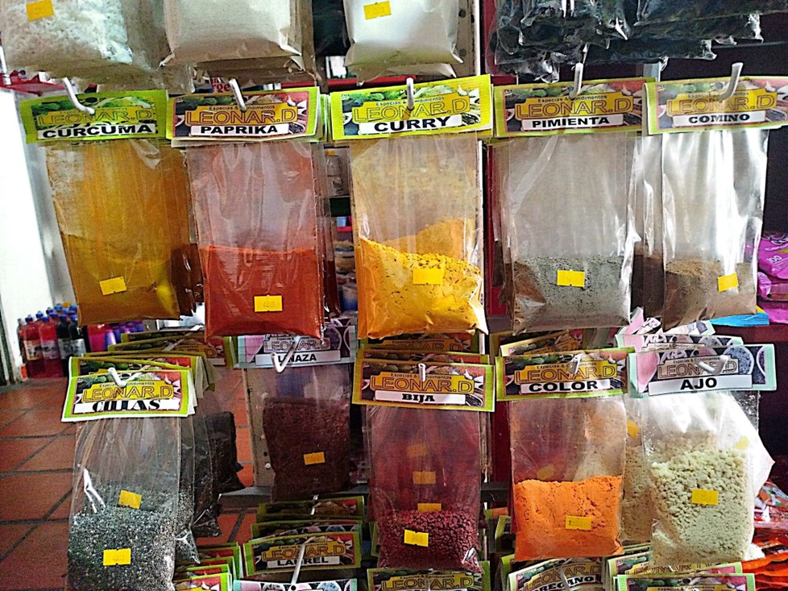

Sabores Únicos, Calidad Excepcional
Descubre nuestras especias y condimentos artesanales.
Sobre Nosotros
En Especias & Condimentos LEONAR.D, nos apasiona llevar los mejores sabores del mundo a tu cocina. Con años de experiencia y una dedicación inigualable a la calidad, seleccionamos cuidadosamente cada ingrediente para ofrecerte productos que realzan el sabor de tus platos.


- 
Nuestros Productos
Linaza
Semilla rica en fibra y ácidos grasos omega-3, usada en batidos y panadería.
Adobo
Mezcla de especias para sazonar carnes, realza sabores.
Laurel
Hoja aromática que aporta un toque fresco a guisos y salsas.
Tomillo
Hierba con aroma terroso, ideal para carnes y sopas.
Orégano
Especia aromática, clave en pizzas y salsas mediterráneas.
Paprika
Pimentón dulce o picante, da color y sabor a platillos.
Cúrcuma
Raíz amarilla con propiedades antiinflamatorias, usada en curries.
Color
Achiote o cúrcuma, utilizado para dar color vibrante a las comidas.
Pimienta
Grano picante, esencial para realzar sabores.
Comino
Semilla con sabor cálido y terroso, común en platillos latinos y asiáticos.
Nuez Moscada
Especia dulce y cálida, usada en postres y salsas.
Levadura
Agente que hace crecer masas en panadería.
Polvo de Hornear
Leudante químico para masas ligeras y esponjosas.
Bicarbonato
Agente leudante y neutralizador de ácidos en recetas.
Clavos
Brotes secos con sabor intenso, usados en postres y guisos.
Canela
Corteza aromática y dulce, popular en postres y bebidas.
Ajonjolí
Semilla con sabor a nuez, usada en panes y platos asiáticos.
Anís
Semilla dulce con aroma característico, ideal en infusiones y postres.
Coco Deshidratado
Trozos de coco seco, usados en repostería y decoraciones.
Ciruelas Pasas
Frutas deshidratadas, dulces y ricas en fibra.
Uvas Pasas
Uvas secas dulces, perfectas para postres y panes.
Curry
Mezcla de especias aromáticas, base de muchos platillos asiáticos.
Bija
Semilla usada para extraer colorante natural rojo anaranjado.
Ajo
Bulbo aromático, básico para sazonar comidas.
Albahaca
Hierba fresca con aroma dulce, esencial en cocina italiana.
Finas Hierbas
Mezcla de hierbas aromáticas, ideal para sazonar platos ligeros.
Flor de Jamaica
Flores secas usadas en infusiones refrescantes y tartas.
Manzanilla
Flor utilizada para infusiones relajantes y suaves.
Sen
Hojas con propiedades laxantes, usadas en infusiones medicinales.